The big picture
Book today, haul tomorrow
Most truck requests are for the next day or a few days out, so the app is built around booking ahead. A "right now" request is still there for emergencies.
1
Post the job
The contractor picks the job site, the trucks it needs, how many start at the asphalt plant, notes for the drivers, and the date, start time and hours.
2
Drivers pick it up
The job goes to every vetted driver within that distance who has the right truck. It shows up in their Available jobs list, and they can accept until every spot fills. Fleet owners can send their own trucks too.
3
Confirm the night before
Each driver taps "Yes, I'm coming" the evening before. If someone cancels or doesn't confirm, the spot reopens and the app finds a replacement.
4
Haul and pay
On the job day, drivers clock in and out and send updates like "Loaded, heading to the job." The contractor sees every truck on the map. At the end, the contractor pays in one charge and rates the drivers.
Who uses it
I need trucks
Paving and construction companies that book trucks
I drive a truck
Owner-operators and drivers who want work without a broker
I run a fleet
Brokers and companies that send several trucks
Trucks2U admin
Our staff, who check and approve every driver
Pay is by the hour, with a 6-hour minimum. A driver who works 4.5 hours is still paid for 6.
Trucks2U keeps 7% of the driver's pay, the same way a broker does, but brokers keep 10 to 12%. On one 12 wheeler working 8 hours at $130 ($1,040), Trucks2U keeps $73, where a broker at 11% would keep $114. Contractors pay nothing extra.
Computer or phone
One website that works everywhere
Trucks2U is a website first. On a computer it looks like this: a bar across the top, the map filling the screen, and the controls in a panel on the left. Office staff can book and track trucks on a big screen.
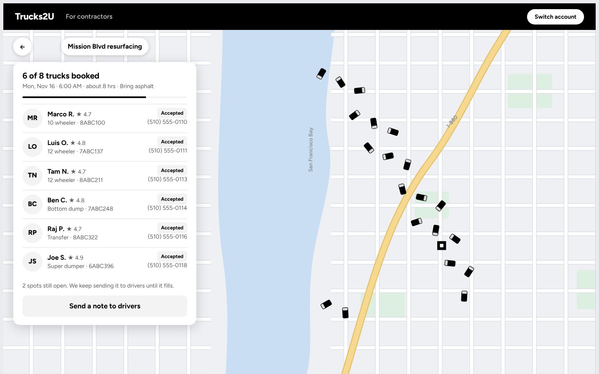
- On a phone, the same website looks like the screens in the rest of this guide. Drivers tap "Add to Home Screen," and it gets an icon and opens like an app.
- Later, once the pilot proves the idea, a driver app in the App Store and Google Play adds live GPS while the phone is locked and more reliable notifications. It reuses most of the website's code.
I need trucks · part 1
Booking trucks
Booking trucks for tomorrow takes about a minute.
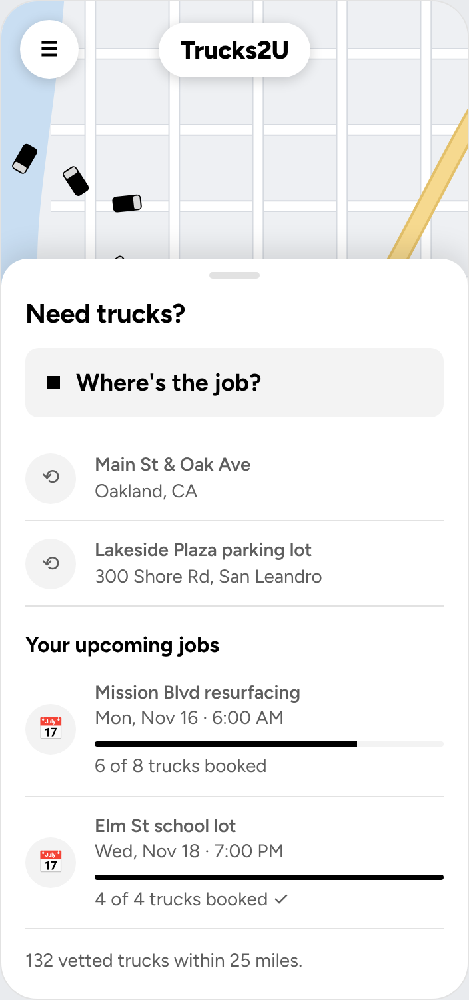
1
Home. Tap Where's the job? or a recent site. Your upcoming jobs show how many trucks are booked, like "6 of 8."
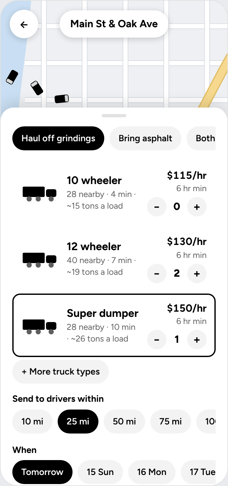
2
Pick your trucks. Choose the work, then set how many of each truck. + More truck types adds bottom dumps, water trucks, lowboys and more.
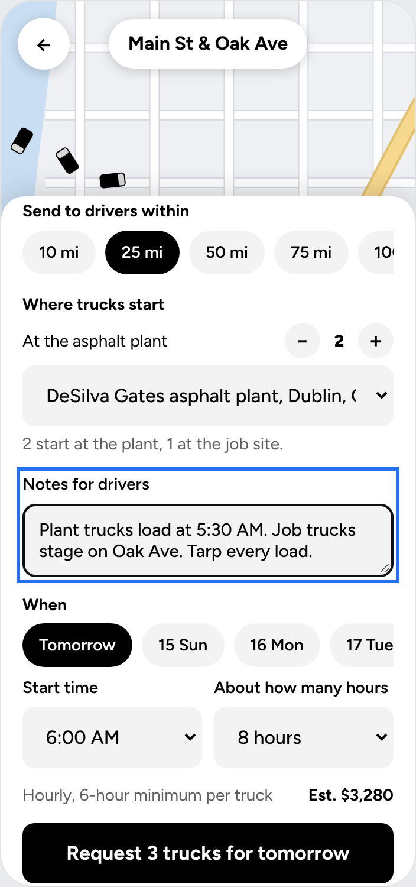
3
Where trucks start. Set how many trucks start at the asphalt plant and pick the plant. The rest start at the job. Add Notes for drivers, like staging or load times.
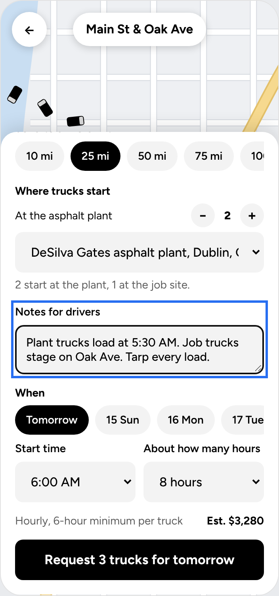
4
When. Pick the day (tomorrow is the default), the start time and about how many hours. Then tap Request trucks for tomorrow.
Search distance. Above "Where trucks start," choose how far to send the request, from 10 to 100 miles.
I need trucks · part 2
Getting booked
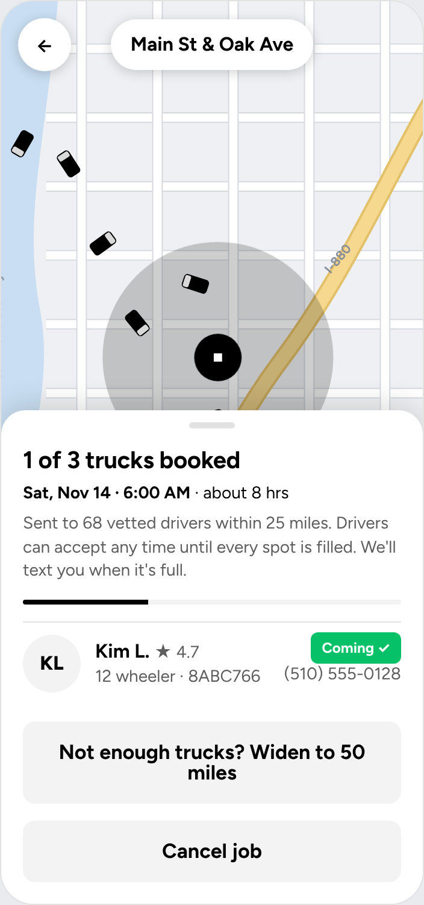
5
Booking. Drivers accept one by one, any time until the job fills. If trucks are slow to come in, tap Widen to search farther.
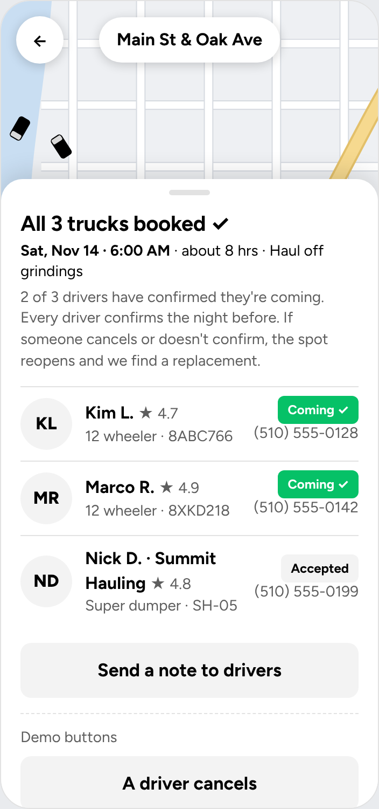
6
All booked. Every driver, their truck and phone number. Coming ✓ means they've confirmed for tomorrow. Send a note to drivers messages the whole crew.
If a driver cancels, the spot reopens right away and goes back out to drivers nearby. You get a message when a replacement accepts. In the prototype, the A driver cancels and Jump to the morning of the job buttons let you see both.
I drive a truck · part 1
Finding and taking jobs
Drivers don't have to sit waiting for a request. They pick the jobs they want from a list, like a job board.
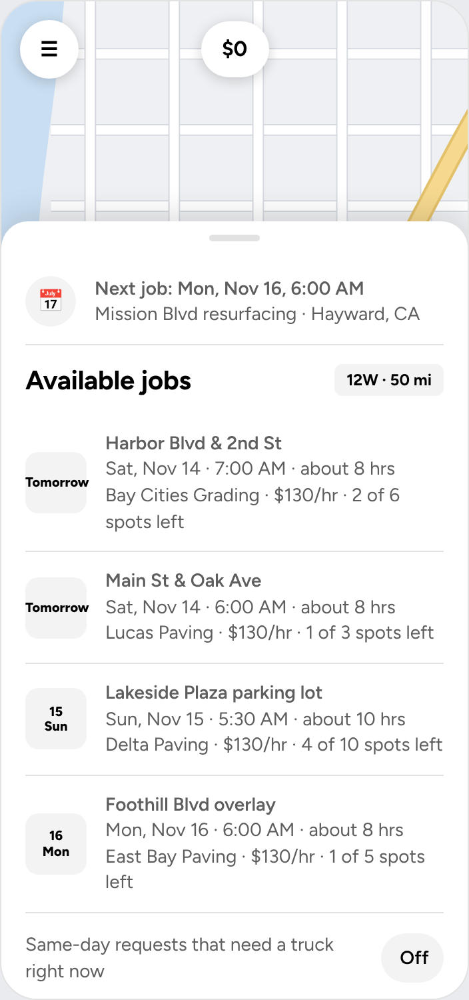
1
Available jobs. Open jobs within your distance for your truck, sorted by date, with the pay and how many spots are left. Your next job shows at the top.
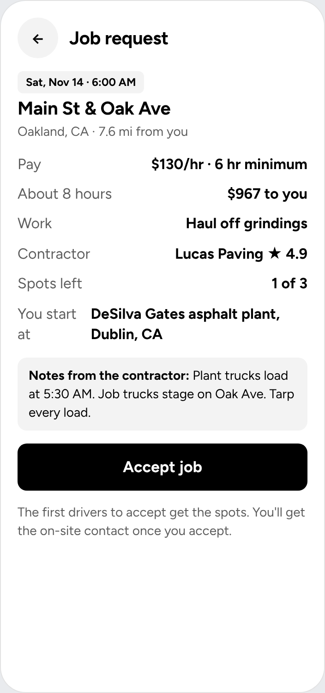
2
Job details. Pay, the 6-hour minimum, about how much you'll make, the work and the contractor's rating. Tap Accept job.
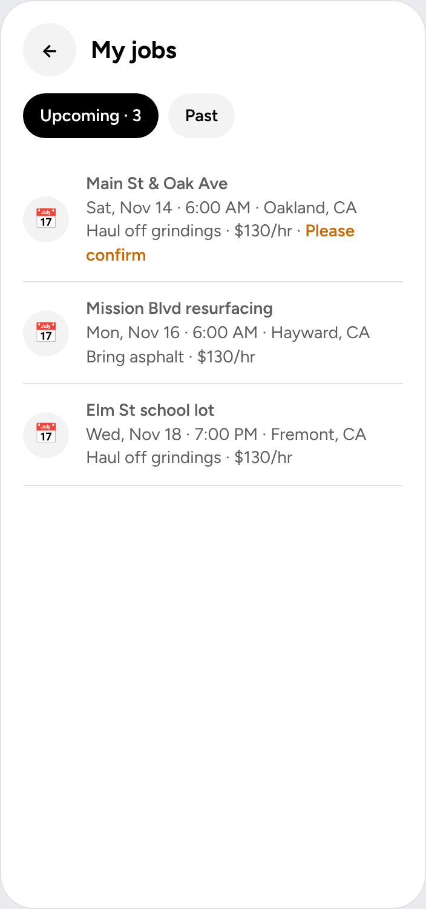
3
My jobs. All your upcoming jobs. Tap one for the on-site contact, dispatch notes, directions, or I can't make it.
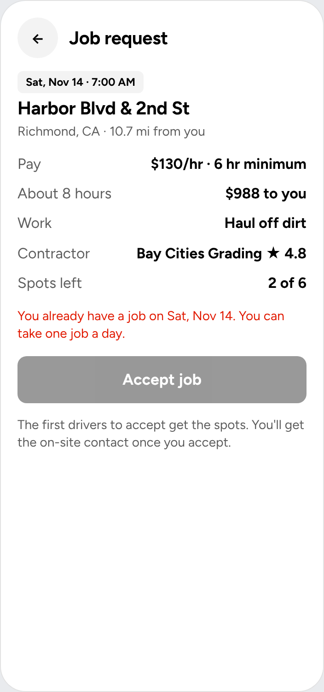
4
One job a day. If you already have a job that day, the app won't let you accept another one.
Same-day requests. A switch at the bottom of the driver's home screen turns on "right now" requests. With it on, a driver gets a pop-up with 20 seconds to accept when a contractor nearby needs a truck immediately.
I run a fleet
For brokers and fleet owners
A fleet owner sees open jobs the same way a driver does, but sends their own trucks. The top of the screen shows how many of their trucks are working.
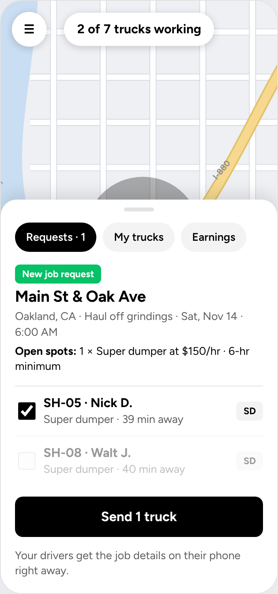
1
Requests. Jobs nearby with the date, the work and the open spots. Check which of your free trucks to send, then tap Send. Your drivers get the job on their phones.

2
My trucks. Every truck, who drives it, and whether it's free, on a job or offline.

3
Earnings. This week's total after the fee, and each truck's earnings today. Paid every Friday.
Still to decide: fleet pricing. The earlier idea was a per-truck fee for brokers who dispatch their own trucks, and the normal 7% on Trucks2U jobs.
Trucks2U admin
Checking every driver
Nobody gets a job until our team approves them. The admin screen is where that happens. In the real app, only Trucks2U staff can open it.
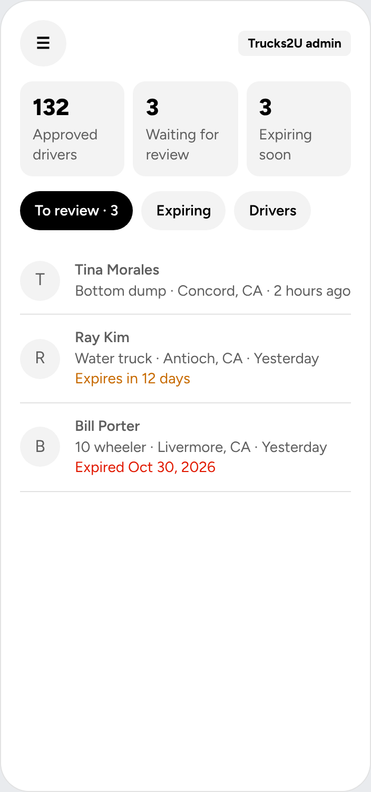
1
To review. New sign-ups waiting for approval, with any problems flagged in orange or red. The counts at the top show approved drivers, drivers waiting, and expiring documents.
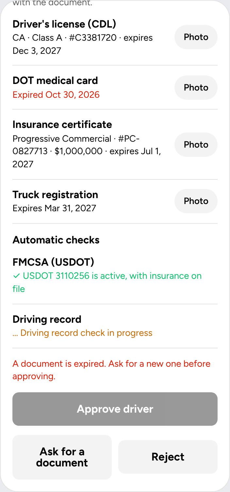
2
One driver. The truck's make, model, year and VIN, then each document with the numbers and dates the driver entered. Tap Photo to compare. Below that, the FMCSA and driving record checks. A driver with an expired document can't be approved.
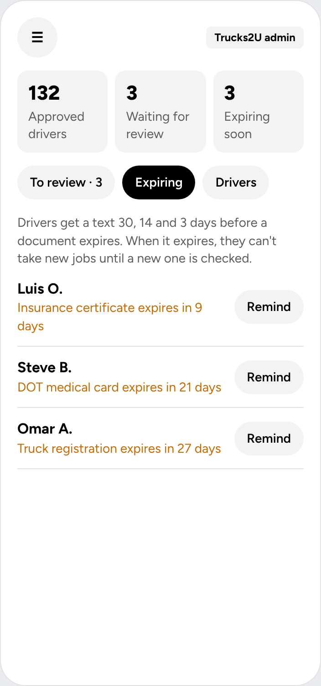
3
Expiring. Drivers get texts 30, 14 and 3 days before a document expires. When it expires, they can't take new jobs until a new one is approved. The Drivers tab lets you suspend someone.
Try it yourself
Using the prototype
The prototype runs in any web browser on a computer or phone. It's a working mock-up for showing people and deciding what to build. It doesn't send real notifications or move real money yet.
Open it
- Link: claude.ai/artifact/Xp6EWSHE75fxyXoPQy5o67
- The code is in your GitHub repository Aperez1248/Trucks2you, in the
app folder.
A good way to demo it
- Tap I need trucks, pick a site, set 2 trucks to start at the plant, add a note, and request trucks for tomorrow.
- Switch to I drive a truck. Your job is in Available jobs. Accept it, then tap Yes, I'm coming.
- Switch to I run a fleet and send a truck to fill the last spot.
- Back as the contractor, open the job. Try A driver cancels, then Jump to the morning of the job.
- As the driver, clock in, tap Loaded, heading to the job, then switch to the contractor to see the update and your truck on the map. Clock out, then end the job and pay as the contractor.
- Sign up as a new driver from the driver menu, then approve yourself from the admin screen.
What's simulated
- Other drivers, the Summit Hauling fleet, the job sites, the map and all prices are sample data.
- Other drivers accept on their own a few seconds apart. The last spots stay open for about 25 seconds so you can take one yourself.
- Time runs fast on the job day. Trucks move at about 1.5 seconds per minute of driving, and the work clock counts 4 minutes every second.
What a real version needs
- A database and logins, so jobs and drivers are saved
- Real text messages and notifications, including the night-before reminder and driver updates
- Live GPS from drivers' phones, and automatic clock-in when a truck reaches the plant or the job
- Document checks: an FMCSA lookup and secure storage for driver documents
- Payments: charging contractors and paying drivers and fleets by bank transfer